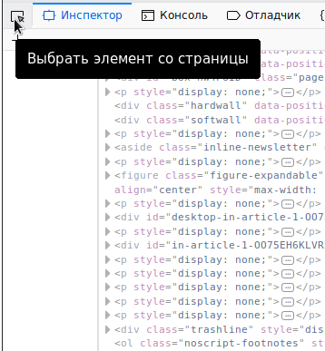

Я - нищеброд. Но иногда даже мне приходится читать буржуйские новости с ихних новостных сайтов. Проблема в том, что многие издания настолько зажрались, что новости у них платные.
Вот, например, Блумберг. Стоимость подписки - 10 баксов в месяц. В год, значит, 120 баксов. А это, извините, по текущему курсу, 9000 руб. Я за дачу в год плачу меньше, чем с меня хочет поиметь это сетевое издание с мировым именем. Дача меня еще картохой с помидорчиками накормит, а Блумберг только словами. Да и смысла нету платить, если читаешь пару-тройку новостей в месяц, чтоб проверить информацию от российских СМИ. В общем, новостные сайты - это охренеть как дорого, если твой доход 15 тыщщ на собственный нос.
Хорошая новость в том, что сайты пишут ленивые программисты, которые вообще не заморачиваются с разруливанием доступа. Скажу больше - они даже загружают пользователю на компьютер полные тексты новостей в открытом виде, поэтому просмотр новостей вполне законен. Нужно просто заменить стиль верстки полученного текста страницы.
Рассмотрим проблему на примере того же Блумберга. Откроем какую-нибудь новость в Firefox. Видим начало новости и мерзкую синюю надпись:
To continue reading this article, you must be a News subscriber.
Subscribe now to get unlimited access.
Запустим веб-инспектор. Нажмем кнопку "Выбрать элемент со страницы", и выберем текст новости, от которой видны только первые строки:

Что мы видим? Куча тегов <p>, внутри которых текст следующих абзацев новости. Вот только стиль у них задан такой:
style="display: none"
Дальше все понтяно - надо поменять его на стиль, который будет просто отображаться в браузере, например на блочный стиль "block". А можно просто удалить стиль.
Для этого надо перейти на вкладку "Консоль" и выполнить команду. Консольв Firefox - это такая штука, которая в контексте текущей страницы выполняет введенный пользователем JavaScript код. При первой попытке выполнить команду, консоль потребует следующего:
Пожалуйста, введите ниже «разрешить вставку» (нет необходимости нажимать Enter), чтобы разрешить вставку.
Да, нужно вручную набить в консоли "разрешить вставку". Enter таки придется нажать. Это нужно сделать один раз, и консоль веб-инспектора начнет работать, и больше такой глупости требовать не будет. Чтобы проверить ее работу, можно написать:
2+2 <Enter>
4
Если все в порядке, можно выполнить код, который заменит стили у всех элементов <p> на странице. Просто надо скопировать код, вставить в консоль и нажать Enter:
var elements = document.getElementsByTagName('p');
for (var i = 0; i < elements.length; i++) {
elements[i].style.display="block";
}
Вот и все, можно читать новость.
Кстати, пару лет назад я писал как читать книги на пиратском сайте Либрусек, за которые пираты хотят получить денег. Вот уж действительно, сбываются предсказания Столлмана, который двадцать лет назад заявил, что право на чтение будет отбираться у людей коммерческими компаниями и корпорациями.